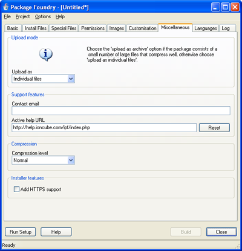

5.7. MiscellaneousThe IPF Miscellaneous tab is shown below:

Commonly a package will be transferred to the FTP server one file at a time. On the other hand, if a server has suitable features, the package may be uploaded as an archive and unpacked on the server. Although less data is transferred using this latter method, more FTP commands may be necessary. With the latency inherent in FTP, this may increase the overall upload time. Which method is perferable depends on the structure of the package. As a guide choose the upload as archive option if the package consists of a small number of large files that compress well, otherwise choose upload as individual files. Testing both options is a good idea. When certain errors occur during an installation, for example if ionCube Loaders are required but not available for the target server, a log file may be generated and sent to ionCube. A contact email address can be provided which we can use to pass on the log, or discuss issues, if needed. Installers created with IPF feature a context-sensitive active help system. A Help button on the installer Wizard launches a web browser and navigates to a web site, passing information related to the current state of the installer. By default the script linked with the active help system is http://help.ioncube.com/ipf/index.php, but a custom site can be used. This enables the active help system to be branded or customised for a particular product or company. Content can be copied from the default active help site. Please read the active help page in this documentation for details on how to customise the active help system for your product. SSL support can be added to installers built with IPF. This enables sites using HTTPS to be accessed. On the other hand, adding SSL support can increase filesize overhead significantly, which is why the option is provided rather than enabling SSL support by default. If bandwidth usage is a particularly important concern then it might be desirable to make two versions of a given product avilable for download: one version with SSL support and one without. |
|
Copyright 2002-2005 ionCube Ltd. All rights reserved.
|